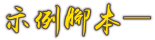

逐字說話(打字機效果)
逐字說話(打字機效果)

- 「逐字說話」是一種「文字渲染」的表現方式，它會快速的將在〖說話積木〗中的文字，以逐字累加的方式來呈現，類似打字機的風格。
- 在製作動畫時，可同時使說話角色脣形同步，就更顯逼真。
- 使用
字串()的第()字木來將說話的內容逐字取出，然後再用字串組合()()來將取出的字一個字一個字依序組合起來，每一次組合後角色都會使用說出()來將組合後的文字呈現。 - 使用
字串()的長度來計算說話內容的文字數量，以確定上述編程要重複多少次。 - 在動畫設計中，一個角色可能需要在不同的時間點說話，就可將每次要說的內容文字，逐項存於清單中，然後將「逐字說話」的腳本自定義一個《函式積木》，形成一個副程式，等到角色要說話時，就可以這個副程式，來將要說的內容文字從清單中取出執行。


 逐字說話
逐字說話此腳本需用到三個變數，分別是「完整內容文字」、「第？個字」和「逐次說的內容」
當@greenflag被點擊 變數[完整內容文字 v]設為(...請輸入要顯現的完整內容..::) 變數[第？個字 v]設為(0) 變數[逐次說的內容 v]設為( )//初始化要說的內容 重複(字串(完整內容文字) 的長度)次//重複的次數就是完整內容的字數 變數[第？個字 v]改變(1) 變數[逐次說的內容 v]設為(字串組合(逐次說的內容)(字串(完整內容文字 )的第(第？個字)字))//將新取出的字與之前的字串組合 說出(逐字說的內容) 等待(0.2)秒 end 等待(1)秒 說出()//清空說話氣泡
 在動畫中使用，與清單結合
在動畫中使用，與清單結合與清單結合，是因為在動畫中，一個角色可能會在不同的時間點說話，為了簡化編程，把每次要說的話內容，依序存至清單中，也不用重複寫好幾次的「逐字說話」腳本，只要將該腳本自定義成一個函式積木，就可以方便呼叫來使用。
📍添加清單內容
新增一個「說話清單」，然後在初始時，將內容文字依照說話的順序加入。
當@greenflag被點擊 刪除[說話清單 v]的所有項目 添加(..內容文字..::grey)到[說話清單 v]//要依序加入 添加(..內容文字..::grey)到[說話清單 v] 添加(..內容文字..::grey)到[說話清單 v] 添加(..內容文字..::grey)到[說話清單 v] 添加(..內容文字..::grey)到[說話清單 v] ...
📍定義函式積木
以下為自定義函式積木的腳本，與上述腳本都一樣，只是成了自定義積木
定義 逐字說話(項次) 變數[完整內容文字 v]設為([說話清單 v]的第(項次)項) 變數[第？個字 v]設為(0) 變數[逐次說的內容 v]設為( )//初始化要說的內容 重複(字串(完整內容文字) 的長度)次//重複的次數就是完整內容的字數 變數[第？個字 v]改變(1) 變數[逐次說的內容 v]設為(字串組合(逐次說的內容)(字串(完整內容文字 )的第(第？個字)字 說出(逐字說的內容) 等待(0.2)秒 end 等待(1)秒 說出()//清空說話氣泡
💥不要勾選「執行完畢再更新畫面」，否則將導致立即顯示全部文本，而不是可看到的打字機效果。
💥使用時，只要更改「項次」即可。